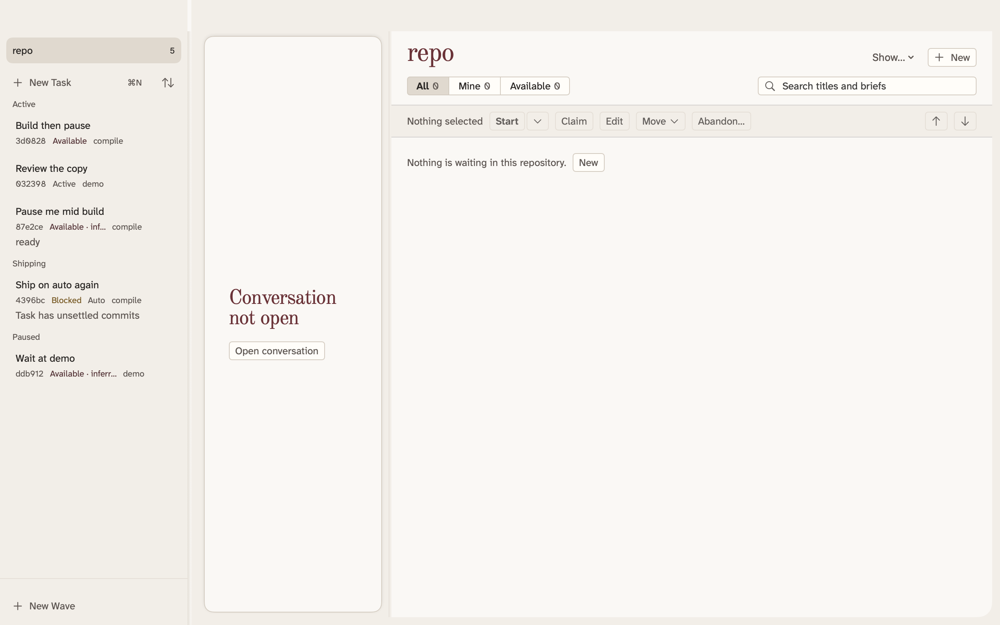
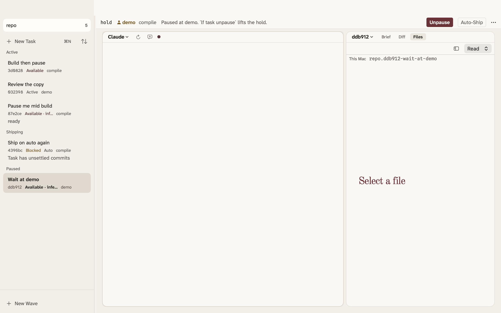

The branch lf at 0bc27cc9cf ran on the private Machine from the earlier walkthrough (LF_HOME=/tmp/lfqp2/home). Its three earlier Tasks served as returning data. Two new Tasks ran real Claude workers doing a real cargo build whose build.rs sleeps for 240 s. The repository Graph hold is - interactive: demo, - compile.
| Scenario | What happened |
|---|---|
| Returning Machine, server restarted on the new binary | Tasks were grouped as Active (032398, 87e2ce) and Paused (ddb912). 87e2ce had been unpaused at compile in the earlier run. It now reads Active, because its Graph has no landing step and auto is off, and its status says “compile was stopped. `lf task run` continues from it.” The earlier run's top open bug (“process exited with status 130 … launch fresh work”) is gone. |
| Pause an unstarted Task | Refused: Task has not started; nothing to pause. |
| Auto on a fresh Task | lf task auto on 4396bc: the Task read Shipping at once and its build ran. |
| Pause one of two live builds | lf task pause 3d0828 returned in 1.6 s. Its carrier, graph run, batch lf, claude -p, zsh, cargo and build-script-build (7 PIDs) were gone. Its primary claude --name 3d0828 stayed. All five of 4396bc's processes kept running. The list showed Shipping / Active / Paused. |
| Run, auto on, and pause again while held | Run and auto on were refused with Task is paused; run `lf task unpause 3d0828` to lift the hold. A second pause printed paused. Status read “Paused at compile. `lf task unpause --run` resumes it.” / “compile is stopped while the Task is paused” and action: no_action. --state paused listed both held Tasks. |
| Machine server restart while held | After 15 s there was no carrier or graph process for 3d0828, and only 4396bc's build was running. |
| Open conversation while held | The primary's first turn read the Task as paused, named lf task unpause 3d0828 --run and started nothing. lf comment was delivered (pending: 0) and the conversation answered “PAUSEDOK”. No Graph process started. |
| Plain unpause | 3d0828 unpaused. No run started. The Task moved to Active with status “compile was stopped. `lf task run` continues from it.” and action: run. lf task run continued hold from compile. |
| Pause the auto Task | 4396bc moved from Shipping to Paused with auto: on kept, and its build was stopped. Plain unpause returned it to Shipping in the idle state. |
Builtin code Graph | It ends ship-review [interactive], reflect, gate, cmd: land --wait-and-fix, verify. Verify is automatic. |
| Mac sidebar (isolated Dev bundle at HEAD, screen locked, live snapshot mode) | The sidebar shows Active (3), Shipping (4396bc, Auto) and Paused (ddb912). With ddb912 selected, the bar reads “Paused at demo. `lf task unpause` lifts the hold.” with Unpause, and the Claude Session pane is mounted. |


No code changes. The QA notes in .lf/qa/task-pause.md now describe how to select a Task in Dev and how to tear down a private home whose server launchd restarts.
lf task run. This follows the decision that plain unpause only lifts the hold, but a Shipping row with nothing moving can read as stuck. The Mac's Unpause button sends plain unpause.waves.rs), not from pause.lf on PATH (installed 0.16.0) failed on the Task with unknown variant 'paused', so the agent fell back to the branch build. Installing the release fixes this skew. It is not a branch bug.Error: invalid data:. This is older behavior.